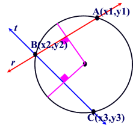
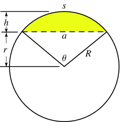
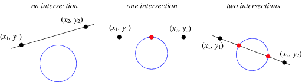
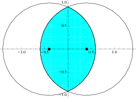
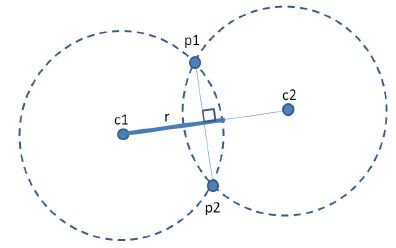
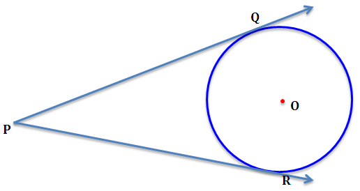

Os círculos são objectos simples, são definidos pelo ponto central e pelo seu raio.
A classe tem dois construtores, um que recebe estes parametros e outro que recebe três pontos na sua circunferência.
Três pontos na circunferência são suficientes para definir um círculo: basta calcular os bisectores das duas cordas definidas pelos três pontos, sendo o centro do círculo a intersecção destes dois bisectores.

A classe:
class Circle { public Point c; // center public double r; // radius public Circle(Point center, double radius) { c = center; r = radius; } // intersect the two bisectors of lines p1p2 and p2p3: that's the circle's center public Circle(Point p1, Point p2, Point p3) { Line b1 = Line.bisector(p1, p2), b2 = Line.bisector(p2, p3); c = b1.intersect(b2); r = c.distance(p1); }
Os seguintes métodos devolvem valores de várias propriedades do círculo:

arco (s), corda (a), área segmento (zona a amarelo) dependem do ângulo \(\theta\) [ref]
public double diameter() { return 2*r; } public double perimeter() { return 2*PI*r; } public double area() { return PI*r*r; } public double lengthArc (double rad) { return perimeter() * rad/(2*PI); } public double lengthCord(double rad) { return 2*r*sin(rad/2.0); } // Segment of a circle is defined as a region of the circle enclosed by a chord // and an arc lying between the chord’s endpoints public double areaSegment(double rad) { return r*r/2 * (rad - sin(rad)); }
O próximo método devolve a interseção de uma recta com o círculo. Este resultado vem num array de pontos (dado que a intersecção pode ser numa tangente ou numa corda) ou devolve null se não existir intersecção. Mais detalhes aqui.

// the array of points (1 or 2) that are the intersection of the circle with line m // if no intersect, it returns null public Point[] intersect(Line m) { double d = sqrt(m.a*m.a + m.b*m.b); Line n = new Line(m.a/d, m.b/d, m.c/d); double e = -n.c - n.a*c.x - n.b*c.y, h = sqrt(r*r - e*e); if (r<e) return null; if (h==0) return new Point[] {new Point(c.x + n.a*e, c.y + n.b*e)}; return new Point[] {new Point(c.x + n.a*e - h*n.b, c.y + n.b*e + h*n.a), new Point(c.x + n.a*e + h*n.b, c.y + n.b*e - h*n.a)}; }
Também está implementada a intersecção com outro círculo [ref]:
// the array of points (1 or 2) that are the intersection of the circle with circle c2 // if equal or no intersect, it returns null // ref: https://sites.google.com/site/indy256/algo/geometry_circle public Point[] intersect(Circle c2) { if (Point.hypot(c.x - c2.c.x, c.y - c2.c.y) < Point.EPSILON) // if same center return null; double dx = c2.c.x - c.x; double dy = c2.c.y - c.y; double A = -2 * dx; double B = -2 * dy; double C = dx * dx + dy * dy + r * r - c2.r * c2.r; Point[] res = new Circle(new Point(0,0), r).intersect(new Line(A, B, C)); for (Point p : res) { p.x += c.x; p.y += c.y; } return res; }
O método seguinte devolve a área da intersecção de dois círculos [ref]:

// ref: https://sites.google.com/site/indy256/algo/geometry_circle public double circleIntersectionArea(Circle c2) { double r = min(this.r, c2.r); double R = max(this.r, c2.r); double d = Point.hypot(c.x - c2.c.x, c.y - c2.c.y); if (d < R - r + Point.EPSILON) return PI * r * r; // same circle if (d > R + r - Point.EPSILON) return 0; // no intersection return r * r * acos((d * d + r * r - R * R) / 2 / d / r) + R * R * acos((d * d + R * R - r * r) / 2 / d / R) - 0.5 * sqrt((-d + r + R) * (d + r - R) * (d - r + R) * (d + r + R)); }
Uma forma alternativa de (quase) especificar um círculo é dar o raio e dois pontos na circunferência. O quase é porque com esta informação há dois círculos possíveis de encontrar:

// this returns one of two possible centers, given a radius and two points // on the circle (to get the other option, reverse the order of the points) public static Point centerGiven(Point p1, Point p2, double radius) { double d2 = (p1.x - p2.x) * (p1.x - p2.x) + (p1.y - p2.y) * (p1.y - p2.y); double det = radius * radius / d2 - 0.25; if (det < 0.0) return null; double h = sqrt(det); return new Point((p1.x + p2.x) * 0.5 + (p1.y - p2.y) * h, (p1.y + p2.y) * 0.5 + (p2.x - p1.x) * h); }
O próximo método devolve os dois pontos que tocam nas tangentes de um ponto a um círculo (se o ponto estiver na circunferência, devolve-se a si, e se estiver dentro do círculo devolve null):

// returns the two points both on the circumference and in the tangent line from p // null if p is inside circle, or just one point if p is in the circumference public Point[] tangents(Point p) { if (c.distance(p) - r < Point.EPSILON) return new Point[] { p }; if (c.distance(p) < r) return null; double dx = c.x - p.x, dy = c.y - p.y, dd = sqrt(dx*dx + dy*dy), a = asin(r/dd), b = atan2(dy,dx); return new Point[] { new Point(r * sin(b-a), r * -cos(b-a)), new Point(r * -sin(b+a), r * cos(b+a)) }; }
Com este material vamos resolver UVas! Sugestões: